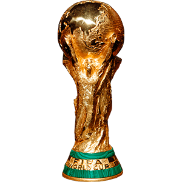

★ LOGROS
Copa América 2021


El 10 de julio de 2021, la consagración de la Copa América le puso fin a la racha de 28 años sin títulos para la Albiceleste y el fútbol por fin pudo saldar la deuda con uno de sus máximos exponentes. La coronación generó que la Selección se liberara de las presiones y crezca en su rendimiento. Llegó la consolidación de La Scaloneta. Una recompensa merecida para los que tenían la espina clavada. Un grito para toda la vida.
Finalissima 2022


La Selección Argentina bailó a Italia en Wembley, se impuso por 3-0 y se consagró campeón de la Finlissima. Con goles de Lautaro Martínez, un golazo de Ángel Di María y un tanto de Paulo Dybala el combinado de Lionel Scaloni, con un Lionel Messi inspirado, lograron un enomre triunfo ante la Azzurra y alzó un nuevo título tras la Copa América conseguida en 2021 en el Maracaná.
World Cup 2022

La Albiceleste de Lionel Messi consiguió la gloria máxima tras el triunfo por penales ante Francia en el Lusail Stadium, luego de igualar 3-3 en los 120 minutos. El haberse impuesto en la mejor final de la historia no hizo más que inyectarle épica a una conquista trabajada, sufrida, pero cargada de mística... Y muy buen fútbol. Se trata de la tercera estrella para la Selección y la primera en el torneo para el astro rosarino que, a los 35 años, logró su gran sueño, como Maradona en 1986.
The Best: Cuatro premios sobre cuatro fue la gran cosecha de la Scaloneta recogida en los Premios The Best, que se otorgaron en París. Lionel Messi (que también formó parte del "equipo ideal"), Lionel Scaloni, Emiliano "Dibu" Martínez y la hinchada albiceleste se llevaron los galardones respectivos a Mejor Jugador, Mejor Entrenador, Mejor Arquero y el Premio a la pasión.
Laureus: Lionel Messi subió al escenario por partida doble: recibió el Premio Laureus al Equipo Mundial del Año en nombre de la selección masculina de fútbol de Argentina, y para levantar su segundo Premio Laureus al Deportista Mundial del Año.
★ JUGADORES
Uno por uno, éstos son los 93 convocados que tuvieron participación, sin discriminar si como
titulares o suplentes o por cantidad de minutos:
★ Arqueros:
Franco Armani
, Esteban Andrada
, Emiliano Martínez
, Agustín Marchesín
, Juan Musso
, Jeremías Ledesma
, Gerónimo Rulli
, Sergio Romero
, Guido Herrera
, Agustín Rossi
, Paulo Gazzaniga
, Federico Gomes Gerth.
★ Defensores:
, Gonzalo Montiel
, Juan Foyth
, Lucas Martínez Quarta
, Germán Pezzella
, Nicolás Otamendi
, Walter Kannemann
, Facundo Medina
, Nicolás Tagliafico
, Leonardo Balerdi
, Lisandro Martínez
, Nahuel Molina Lucero
, Cristian Romero
, Fabricio Bustos
, Renzo Saravia
, Ramiro Funes Mori
, Alan Franco
, Leonel Di Plácido
, Gabriel Mercado
, Emanuel Mammana
, Milton Casco
, Nicolás Figal
, Marcos Rojo
, Nehuén Pérez
, José Luis Palomino
, Marcos Acuña
, Gastón Ávila.
★ Mediocampistas:
, Santiago Ascacibar
, Alexis Mac Allister
, Rodrigo Battaglia
, Domingo Blanco
, Franco Cervi
, Rodrigo De Paul
, Ángel Di Maria
, Alejandro Gómez
, Nicolás Domínguez
, Gastón Gimenez
, Giovani Lo Celso
, Erik Lamela
, Manuel Lanzini
, Gonzalo Martínez
, Maximiliano Meza
, Iván Marcone
, Lucas Ocampos
, Leandro Paredes
, Exequiel Palacios
, Guido Pizarro
, Roberto Pereyra
, Guido Rodríguez
, Eduardo Salvio
, Franco Vázquez
, Matías Vargas
, Matías Zaracho
, Emiliano Buendía
, Cristian Medina
, Santiago Simón
, Thiago Almada
, Enzo Fernández
, Franco Carboni
, Luka Romero
, Thiago Geralnik
, Nicolás Paz.
★ Delanteros:
, Valentin Carboni
, Sergio Agüero
, Lucas Alario
, Darío Benedetto
, Joaquín Correa
, Ángel Correa
, Paulo Dybala
, Julián Álvarez
, Adolfo Gaich
, Nicolás González
, Mauro Icardi
, Cristián Pavón
, Lautaro Martínez
, Lionel Messi
, Giovanni Simeone
, Matías Suárez
, Lucas Boyé
, Matías Soulé
, Exequiel Zeballos
, Alejandro Garnacho.